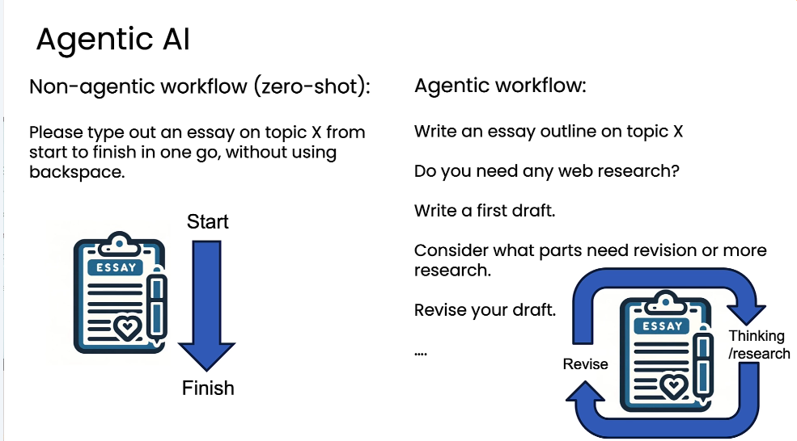

The difference is the sequence around the model
A non-agentic, zero-shot workflow asks for the finished result in one prompt. An agentic workflow gives the application several opportunities to plan, gather information, draft, inspect, and revise.

{kind=link}
“Agentic” allows different degrees of autonomy
The course uses agentic as an adjective so systems do not have to pass a single test to count as an “agent.” What matters is how many workflow decisions are fixed by developers and how many are left to the model.
The course highlights performance, parallelism, and modularity
Better performance
Generation followed by checking and improvement can outperform the same model used once.
Parallel work
Independent searches or downloads can run at the same time before their results are combined.
Modular components
A team can add or replace a search tool, model, or workflow step without rebuilding everything.
Broader applications
The lessons apply the pattern to invoices, customer email, open-ended service tasks, research, and computer use.
Easier starting point
Known procedure, mostly text
Clear steps and established operating procedures make the workflow easier to define.
Harder starting point
Unknown steps, multimodal work
Planning while acting, changing interfaces, sound, and vision raise the difficulty.
Decompose the task until every step is executable
The course suggests watching how a person would do the work, naming the discrete steps, and asking whether each one can be handled by a model or a tool. If a step performs poorly, split it again.
Decomposition stops only when each step has an executor. Human review is a deliberate boundary when the available model and tools are not enough.
- ObserveDescribe the human workflow. Focus on actions and decisions, not job titles.
- SplitIdentify independent steps. For a customer email: extract the order details, query the order database, then write the reply.
- AssignMatch each step to a building block. Models generate or extract; tools search, retrieve, calculate, update, or execute.
- RefineBreak down the weak step. The five-step essay workflow adds draft, reflection, and revision where a three-step version remains disjointed.
Email workflow · interface sketch
extract_request(email) -> {order_id, issue}lookup_order(order_id) -> order_recorddraft_reply(request, order_record) -> draftrequest_review(draft) -> approved_draftThe human-in-the-loop boundary is explicit, not hidden inside “send.”send_email(approved_draft) -> receipt
The workflow is a set of owned boundaries
The word agent compresses several responsibilities. A design document should expand them again: who receives the request, who chooses the next operation, which code can touch a database, where human review enters, and which artifacts survive the run.
Module 1 defines an agentic workflow as an LLM-based application that executes multiple steps to complete a task. The application is the important noun. The model supplies language generation, extraction, and some decisions, but the surrounding program supplies order, tool access, state, and stopping conditions. A workflow can be agentic even when every step is predetermined, because the model still performs nontrivial work inside those steps. More autonomous systems move additional decisions, such as tool choice and sequence, into model calls.
This view prevents a common conceptual mistake: treating a fluent response as proof that the operation happened. In the invoice example, an extracted due date is only an intermediate value until application code validates its format and sends it to the database update tool. In the customer-email example, a draft is not the same artifact as a sent email; the course deliberately places human review between them.
A generic agentic workflow
C4-style · system context
External person
User requestGoal, source material, constraintsApplication
Workflow controllerOrders known steps and carries artifactsModel
LLM stepExtracts, drafts, decides, or evaluatesApplication capability
Tool or human reviewRetrieves, calculates, updates, or approvesOperational state
Database, files, servicesRead or changed only through explicit operationsDurable artifacts
Result + traceFinal output and intermediate evidenceComponent ownership
Input adapter
Normalizes the user request and attaches the source artifacts required for the task.
- Owned by
- Application code
- Reads
- User input, files, or messages
- Returns
- A step-ready request object
Workflow controller
Selects the next predetermined step, passes forward the prior artifact, and stops when the route is complete.
- Owned by
- Application code in a fixed workflow
- Mutates
- Workflow state, not business state directly
- Returns
- Trace plus final result
Model step
Performs one bounded language task: extraction, query drafting, response drafting, critique, or revision.
- Owned by
- Prompt plus selected model
- Reads
- Only the context supplied to that call
- Returns
- A proposed artifact
Effect adapter
Calls search, retrieval, code execution, database update, or human review with explicit arguments.
- Owned by
- Application/tool code
- Mutates
- Only the service named by the capability
- Returns
- Tool result or approval decision
Framework-free orchestration is ordinary control flow
The course begins with workflow diagrams because the low-level implementation is small enough to reason about directly. The following teaching decomposition is not a verbatim course API. It translates the essay, invoice, and customer-email examples into plain Python-like contracts.
def run_workflow(request, steps, state):
trace = []
artifact = request
for step in steps:
before = snapshot(state)
artifact = run_step(step, artifact, state)
trace.append({
"step": step.name,
"input": artifact.input,
"output": artifact,
"before": before,
"after": snapshot(state),
})
return {"answer": artifact, "trace": trace}
def run_step(step, artifact, state):
if step.kind == "llm":
return call_model(step.prompt, artifact)
if step.kind == "tool":
args = step.build_args(artifact)
return step.function(**args)
if step.kind == "human_review":
return request_review(artifact)run_workflow owns sequence and trace construction. run_step owns dispatch. The LLM never gains ambient access to every tool merely because the application has imported it. Each step receives the context and capability chosen for that point in the route.
Teaching boundary: in a fixed workflow, autonomy lives inside a step. In a planning workflow, autonomy also influences which steps are created or selected. The trace format can remain the same in both cases.
Failure modes appear at boundaries
The result covers obvious facts but omits research, checking, or revision.
Add explicit steps and artifacts.
The model describes a database update but no update capability is called.
Separate proposal from effect.
No available model or tool can complete one stage reliably.
Decompose again or add review.
A later model call lacks the exact output produced earlier.
Name and persist the artifact.
A consequential output bypasses the human-review point shown in the design.
Represent approval as a real step.
The trace is the executable explanation
For the course customer-email example, the final reply is only the last artifact. The trace shows how the system derived it and where an engineer can intervene.
Incoming message
“I ordered a blue KitchenPro blender (Order #8847) but received a red toaster instead. I need the blender for my daughter's birthday party this weekend.”
| Span | Owner | Reads | Produces | Effect |
|---|---|---|---|---|
| 01 | LLM extraction step | Customer email | Customer name, order ID 8847, expected blue blender, received red toaster, timing constraint | No mutation |
| 02 | Orders query tool | Order ID and product details | Verified order record or a not-found result | Read-only lookup |
| 03 | LLM response step | Original message plus verified record | Draft that addresses the shipment error and the time-sensitive context | No mutation |
| 04 | Human review tool | Draft plus evidence | Approval, edits, or rejection | Review decision |
| 05 | Application | Approved draft and full trace | Final customer response plus stored evidence | Only the approved route may proceed |
The trace localizes faults. Missing order details point to extraction. A wrong record points to the query arguments or the order service. A defensive tone points to the drafting prompt. A good draft that should not be sent points to the review decision. Without spans, all of these failures collapse into “the agent gave a bad answer.”
Build first, inspect outputs, then add focused evals
The lessons discourage guessing every failure before a prototype exists. Run an end-to-end version, inspect its outputs and intermediate work, identify a meaningful weakness, and create a small evaluation that tracks it.
Objective check
Code can count a prohibited competitor mention or compare an extracted date with a known answer.
Model judge
When quality is subjective, a separate model can score the output against explicit criteria.
End-to-end eval
Measure the quality of the final workflow result.
Component eval
Measure one step, such as information extraction or search quality.
Evaluation boundaries
evaluate_workflow(final_output) -> scoreEnd-to-end: does the completed workflow satisfy the task?evaluate_component(step_output) -> scoreComponent-level: did one selected step do its job?
Four design patterns organize the building blocks
The later modules develop these patterns in increasing depth. Reflection and tool use can be embedded in fixed workflows; planning and multi-agent collaboration grant more decisions to the system and can be harder to control and debug.
Recall before you move on
Try it in code
- Choose one real task and write the one-pass version before adding workflow steps.
- Describe how a person would complete it, naming each decision and external action.
- Assign every step to an LLM, another model, a tool, or human review.
- Define the artifact that crosses each handoff.
- Implement the route as a plain list of step functions.
- Capture every step input, output, error, and state change in one trace.
- Inspect 10-20 runs and select one recurring failure for an evaluation.
- Split the weakest step or add the missing capability, then rerun the same cases.
Self-check
How does the course define an agentic AI workflow?
It is an LLM-based application that carries out multiple steps to complete a task.
What are the two basic workflow building blocks?
Models and tools. Models generate, interpret, or decide; tools connect the workflow to functions, APIs, retrieval, and code execution.
What should you do when one workflow step performs poorly?
Study how a person would complete it, then divide it into smaller steps that available models or tools can handle.
Local course authority
This chapter is grounded in the complete local Module 1 learner PDF and the existing course notes. The Python-like contracts are teaching decompositions of the workflow diagrams, not verbatim framework APIs. No notebook links or outside course claims are included.